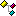

DatFile Class

public class DatFile
Object to work with and create DAT archives
Constructors
 public DatFile( )
public DatFile( )
Create a blank Dat archive. FilePath defaults to "newfile.dat"
public DatFile(string file)
Loads an existing Dat archive
file - Full path to the *.dat file
Exceptions
Idmr.Common.LoadFileException - File cannot be loaded, check InnerException
Methods
public void DecodeFile(byte[] rawData)
Populates the Dat with the raw byte data from file
rawData - Entire contents of a *.DAT archive
Exceptions
System.ArgumentException - Validation error
 public static System.Drawing.Bitmap DecodeImage(byte[] rawData, int width, int height, System.Drawing.Color[] colors, ImageType type)
public static System.Drawing.Bitmap DecodeImage(byte[] rawData, int width, int height, System.Drawing.Color[] colors, ImageType type)
Gets the image from the given information
rawData - Encoded Rows data
width - Image width
height - Image height
colors - Defined Color array to be used for the image
type - Encoding protocol used for rawData
public static byte[] EncodeImage(System.Drawing.Bitmap image, ImageType type, System.Drawing.Color[] colors, out System.Drawing.Bitmap trimmedImage, out System.Drawing.Color[] trimmedColors)
Returns the encoded Rows data given the image and settings - Unused color indexes are removed from both colors and image, the returned array reflects the trimmed parameters
image - The image to encode
type - The encoding protocol to use
colors - The color array to use
trimmedImage - image with unused color indexes removed
trimmedColors - colors with unused color indexes removed
Exceptions
Idmr.Common.BoundaryException - image exceeds allowable dimensions
public void Save( )
Saves the Dat archive in its existing location
Exceptions
Idmr.Common.SaveFileException - File cannot be saved, check InnerException for more details. Original file remains unchanged if applicable
public void Save(string file)
Saves the Dat archive to a new location
file - Full path to the new location
Exceptions
Idmr.Common.SaveFileException - File cannot be saved, check InnerException for more details. Original file remains unchanged if applicable
Properties
 public string FileName
public string FileName
Gets the file name of the Dat object
public string FilePath
Gets the full path to the dat object
public GroupCollection Groups
Gets or sets the Collection of Groups in the archive
public const short MaximumHeight
Maximum allowable image height
public const short MaximumWidth
Maximum allowable image width
public int NumberOfGroups
Gets the number of Groups in the archive
Enumerations
public enum ImageType : short { Transparent = 7, Blended = 24, UncompressedBlended }
Types of image compression. Transparent is 0-8bbp Indexed, transparent color is Color[0]. Blended is 0-16bpp Indexed Alpha compressed. UncompressedBlended is 16bpp Indexed Alpha uncompressed
Structures
 public struct Group
public struct Group
Container for a Group, acts as a simple wrapper for Subs
Constructors
public Group(byte[] header)
Create a new Group according to the supplied header information
header - GroupHeader raw data
Exceptions
System.ArgumentException - header is not the required length
public Group(SubCollection subs)
Create a new Group and populate with the given SubCollection
subs - Subs to be included in the Group
public Group(short groupID)
Create an empty Group with the given ID. Subs is set to null
groupID - Group ID value
public Group(short groupID, System.Drawing.Bitmap[] images)
Creates a new Group and populates it with the given images. Sub.SubID values start at 0 and increment by 1. All images must be 8bppIndexed and are initialized as ImageType.Transparent. To use Blended images, Subs must individually have their Type changed and use SetTransparencyMask()
groupID - Group ID value
images - Images from which to create the Subs
Exceptions
System.ArgumentException - Not all images are 8bppIndexed
Idmr.Common.BoundaryException - Not all images meet allowable dimensions
Properties
public short ID
Gets or Sets the Group Identifier. Updating through GroupCollection.SetID( ) is preferred
public int NumberOfSubs
Gets the number of Subs within the Group
public SubCollection Subs
Gets or sets the Collection of Subs within the Group
public struct Sub
Container for individual images
Constructors
public Sub(byte[] raw)
Create a new Sub with the provided raw data
raw - GroupHeader raw data
Exceptions
System.ArgumentException - Validation error
public Sub(short groupID, short subID)
Create an empty Sub. Initialized as ImageType.Transparent. Image and Colors set to null
groupID - Group ID value
subID - Sub ID value
public Sub(short groupID, short subID, System.Drawing.Bitmap image)
Create a new sub from the provided image and IDs. image must be 8bppIndexed, 640x480 max. Initialized as ImageType.Transparent. If a Blended type is desired, change Type and SetTransparencyMask( )
groupID - Group ID value
subID - Sub ID value
image - The image to be used
Exceptions
System.ArgumentException - image is not 8bppIndexed
Idmr.Common.BoundaryException - image exceeds allowable dimensions
Methods
public void SetImage(System.Drawing.Bitmap image)
Sets the image of the Sub. image restricted to 640x480
image - The image to be used
Exceptions
System.ArgumentException - Invalid image value
public void SetImage(System.Drawing.Bitmap image, System.Drawing.Bitmap mask)
Sets the image and transparency of the Sub. image restricted to 640x480. mask.Size must match image.Size, must be 8bppIndexed. 0 is transparent, 255 is solid.
image - The image to be used
mask - The transparency mask to be used. Ignored if Type = Transparent
Exceptions
System.ArgumentException - Invalid image or mask values
public void SetTransparencyMask(System.Drawing.Bitmap mask)
Sets the transparency of the Sub for Blended types. mask.Size must match Image.Size, must be 8bppIndexed. Index 0 is transparent, 255 is solid. Typically a grayscale image, 0 being black and 255 as white.
mask - The transparency mask to be used
System.ArgumentException - Invalid mask value
Properties
public System.Drawing.Color[] Colors
Collection of colors defined by the Sub
public short GroupID
Gets or sets the ID of the parent Group
public short Height
Gets the height of the image
public System.Drawing.Bitmap Image
Gets the image of the Sub
public int NumberOfColors
Gets the number of colors defined in the Sub
public short SubID
Gets or sets the ID of the Sub
public ImageType Type
Gets or sets the format of the raw byte data. Transparency data is lost when going to ImageType.Transparent
GroupCollection class
public class GroupCollection
Object to maintain Dat archive Groups
Constructors
public GroupCollection( )
Creates an empty Collection
public GroupCollection(int quantity)
Creates a Collection with multiple initial Groups. Individual Groups remain uninitialized
quantity - Number of Groups to start with
Exceptions
System.ArgumentException - quantity is not positive
public GroupCollection(DatFile.Group[] groups)
Creates a Collection and populates it with the provided Groups. Groups will be sorted by ascending ID
groups - Initial Groups
Methods
public int Add(short groupID)
Adds an empty Group with the given ID. Returns the index of the Group within the Collection. Group is added and then the Collection is sorted by ascending ID
groupID - ID value for the new Group
Exceptions
System.ArgumentException - groupID is already in use
public int Add(short groupID, System.Drawing.Bitmap[] images)
Adds a Group with the given ID and Subs created from images. Returns the index of the Group within the Collection. Group is added and then the Collection is sorted by ascending ID. images must all be 8bppIndexed and are initialized as ImageType.Transparent. To use Blended images, Subs must individually have their Type changed and use SetTransparencyMask( )
groupID - ID value for the new Group
images - Images from which to create the Subs
Exceptions
System.ArgumentException - groupID is already in use, or images are not all 8bppIndexed
public int Add(SubCollection subs)
Adds a Group populated with the given Collection of Subs. Returns the index of the Group within the Collection. Group is added and then the Collection is sorted by ascending SubID
subs - Subs to be included in the Group
Exceptions
System.ArgumentException - Group.ID is already in use
public int Add(DatFile.Group group)
Adds a Group to the Collection. Returns the index of the Group within the Collection. Group is added and then the Collection is sorted by ascending SubID
group - Group to be added
Exceptions
System.ArgumentException - Group.ID is already in use
public void Clear( )
Empties the Collection of entries. All existing Groups are lost, Count is set to zero
public bool Remove(int index)
Deletes the specified Group from the Collection. Returns true if successful, false for invalid index value. If only Group is specified, executes Clear( )
index - Group index
public bool RemoveById(short groupID)
Deletes the Group with the specified ID. Returns true if successful, false for invalid groupID value. If only Group is specified, executes Clear( )
groupID - The ID of the Group to be deleted
public int SetGroupID(short groupID, short newID)
Updates the Group.ID. Returns the index of the updated Group within the Collection. Group.ID is updated and then the Collection is sorted by ascending ID. This is the preferred method for updating Group IDs
groupID - The existing Group.ID
newID - The new Group.ID
Exceptions
System.ArgumentException - newID is already in use or groupID does not exist
public int GetIndex(short groupID)
Gets the Collection index of the Group with the provided ID. Returns Collection index if groupID exists, otherwise -1
groupID - Group ID value
Properties
public DatFile.Group this[int index]
A single Group within the Collection
public int Count
Gets the number of objects in the Collection
public int NumberOfColors
Gets the total number of colors defined in the Collection. Equals the sum of this[].NumberOfColors values
public short NumberOfSubs
Gets the total number of Subs defined in the file. Equals the sum of Groups[].NumberOfSubs values
SubCollection class
public class SubCollection
Object to maintain Dat archive Subs
Constructors
public SubCollection(short groupID)
Creates an empty Collection
groupID - ID value of the parent Group
public SubCollection(int quantity, short groupID)
Creates a Collection with multiple initial Subs. Individual Subs are created with groupID and SubIDs starting from zero. Sub colors and images remain uninitialized
quantity - Number of Groups to start with
groupID - ID value of the parent Group
Exceptions
System.ArgumentException - quantity is not positive
public SubCollection(short groupID, System.Drawing.Bitmap[] images)
Creates a Collection and populates it with Subs created from the provided images. images must all be 8bppIndexed, 640x480 max. Initialized as ImageType.Transparent. If a Blended type is desired, change Type and SetTransparencyMask( )
groupID - ID value of the parent Group
images - Images from which to create the Subs
Exceptions
System.ArgumentException - images are not all not 8bppIndexed
Idmr.Common.BoundaryException - images do not all meet allowable dimensions
public SubCollection(DatFile.Sub[] subs)
Creates a Collection and populates it with the provided Subs. GroupID defined by first Sub. Subs will be sorted by ascending SubID
subs - Initial Subs
Methods
public int Add(short subID)
Adds an empty Sub. Returns the index of the Sub within the Collection. Sub is added and then the Collection is sorted by ascending ID
subID - ID value for the new Sub
Exceptions
System.ArgumentException - subID is already in use
public int Add(short subID, System.Drawing.Bitmap image)
Adds a new Sub with the provided image. Returns the index of the Sub within the Collection. Sub is added and then the Collection is sorted by ascending SubID
subID - ID value for the new Sub
image - Image to be used, must be 8bppIndexed
Exceptions
System.ArgumentException - image is not formatted properly or subID is already in use
Idmr.Common.BoundaryException - image exceeds allowable dimensions
public int Add(DatFile.Sub sub)
Adds a Sub to the Collection. Returns the index of the Sub within the Collection. Sub is added with the Collection's GroupID and then the Collection is sorted by ascending SubID
sub - Sub to be added
Exceptions
System.ArgumentException - subID is already in use
public void Clear( )
Empties the Collection of entries. All existing Subs are lost, Count is set to zero
public bool Remove(int index)
Deletes the specified Sub from the Collection. Returns true if successful, false for invalid index value. If only Sub is specified, executes Clear( )
index - Sub index
public bool RemoveById(short subID)
Deletes the Sub with the specified ID. Returns true if successful, false for invalid subID value. If only Sub is specified, executes Clear( )
subID - The ID of the Sub to be deleted
public int SetSubID(short subID, short newID)
Updates the Sub.ID. Returns the index of the updated Sub within the Collection. Sub.ID is updated and then the Collection is sorted by ascending ID. This is the preferred method for updating Sub IDs
subID - The existing Sub.ID
newID - The new Sub.ID
Exceptions
System.ArgumentException - newID is already in use or subID does not exist
public int GetIndex(short subID)
Gets the Collection index of the Sub with the provided ID. Returns Collection index if subID exists, otherwise -1
subID - Sub ID value
Properties
public DatFile.Sub this[int index]
A single Sub within the Collection
public int Count
Gets the number of objects in the Collection
public int NumberOfColors
Gets the total number of colors defined in the Collection. Equals the sum of Sub[].NumberOfColors values
public short GroupID
Gets or sets the ID value of the defined parent Group